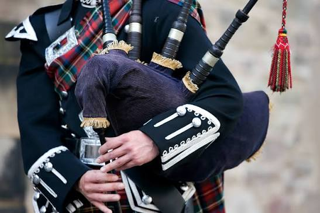
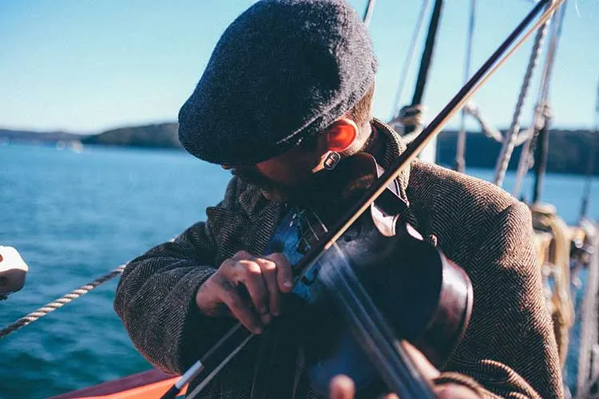
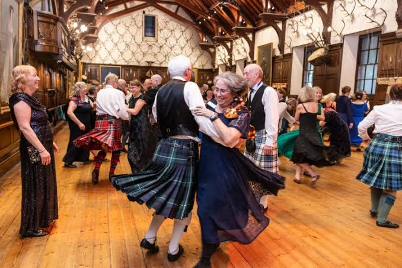

Traditional Instrument
The Highland Bagpipe
The iconic sound of Scotland, historically used to rally clans and lead troops into battle with powerful, resonating melodies.

Folk Tradition
Fiddle & Gaelic Folk
Scottish folk music relies heavily on the fiddle, accordion, and acoustic guitar, accompanied by traditional Gaelic vocal styling.

Social Gathering
Ceilidh Dances
A traditional Scottish social gathering filled with fast-paced folk music, energetic group dancing, and communal storytelling.
Modern Scene
Rock & Indie
Beyond traditional roots, Scotland has produced world-renowned rock bands, alternative artists, and massive modern music festivals.